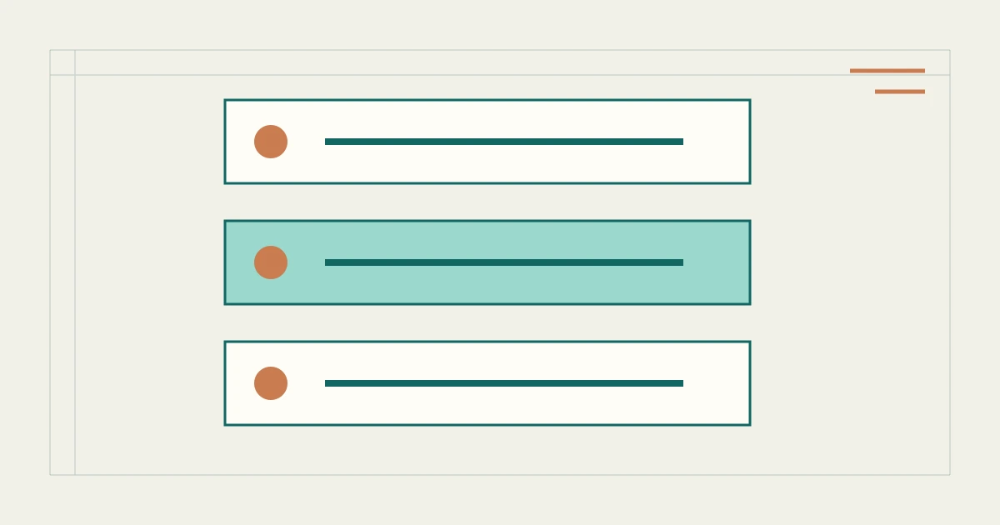

%%P9_EYEBROW%%
%%P9_TITLE%%
%%P9_SUMMARY%%

本页页签
%%P9_H2_1%%
%%P9_TEXT_1%%
Q1%%P9_QUESTION_1%%
%%P9_RESEARCH_1%%
%%P9_UNRESOLVED_1%%
Q2%%P9_QUESTION_2%%
%%P9_RESEARCH_2%%
%%P9_UNRESOLVED_2%%
Q3%%P9_QUESTION_3%%
%%P9_RESEARCH_3%%
%%P9_UNRESOLVED_3%%
%%P9_H2_2%%
%%P9_TEXT_2%%
- %%P9_POINT_1%%
- %%P9_POINT_2%%
- %%P9_POINT_3%%
%%P9_H2_3%%
%%P9_TEXT_3%%
%%P9_CONTEXT_QUOTE%%
%%P9_CONTEXT_CITE%%
%%P9_H2_4%%
%%P9_TEXT_4%%
%%P9_FAQ_LABEL%%
%%P9_FAQ_Q_1%%
%%P9_FAQ_A_1%%
%%P9_FAQ_Q_2%%
%%P9_FAQ_A_2%%
%%P9_FAQ_Q_3%%
%%P9_FAQ_A_3%%
%%P9_SOURCE_LABEL%%
- %%P9_SOURCE_TITLE_1%%
%%P9_SOURCE_NOTE_1%%
- %%P9_SOURCE_TITLE_2%%
%%P9_SOURCE_NOTE_2%%
%%AUTHOR_BIO%%